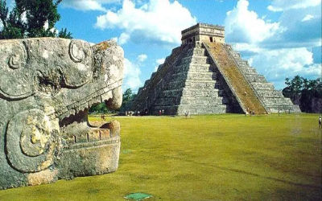

Arte Pré-Colombiana
São várias as contribuições artísticas antepassadas para nosso design e arquitetura atuais, em especial aquelas anteriores aos séculos XV e XVI, sendo uma das mais conhecidas e inspiradoras a arte pré-colombiana.
Expressada em diferentes segmentos, dentre eles o arquitetônico, artístico (pintura e escultura), de joias, ourivesaria e até na criação de objetos domésticos e ornamentais, a arte pré-colombiana é marcada pela manifestação artística e cultural por meio do uso de materiais naturais e rústicos, como pedras, tecidos, metais, cerâmica e, principalmente, o barro. Sabendo da sua importância para a história do design, o Westwing apresenta um panorama histórico completo da arte pré-colombiana, com seus atributos e aplicações. Confira!
Arte Pré-Colombiana: História e Cultura
A arte pré-colombiana surgiu em 1942, antes de Cristóvão Colombo chegar à América e, atualmente, revela grande parte do que restou das civilizações existentes antes da colonização europeia do continente, ou seja, as obras feitas por artesãos da época que tinham como objetivo transferir para as peças as representações da ciência e de suas crenças populares.
Por isso, considera-se que a arte pré-colombiana reúne objetos decorativos e belas construções, com funções religiosas e um tanto sobrenaturais. Templos, residências, esculturas, relevos, pinturas, amuletos e utensílios domésticos fazem parte da arte pré-colombiana e foram criados durante 20 mil anos por meio da simbologia de cada um dos povos ameríndios: maias, astecas e incas.
Características e Obras da Arte Pré-Colombiana
Espalhadas pela região mesoamericana (México, Nicarágua, Guatemala, Costa Rica, Panamá e Honduras), além do Peru, Equador, Bolívia, Chile, Argentina e Colômbia, estas três importantes civilizações foram as grandes responsáveis por dar à arte pré-colombiana seus formatos bastante característicos e o caráter influenciador até hoje presente em símbolos históricos distribuídos pelos museus e construções destes países.
Começando pela cultura maia, a arte pré-colombiana é representada pelas pinturas e esculturas baseadas em moldes geométricos, zoomórficos e desenhos humanos, esta última produzida com o uso de argila e pedras, além colorações com símbolos próprios dados para cada cor. Construções arquitetônicas também são símbolos da arte maia, em especial a organização sistemática das edificações e os altos templos sobre pirâmides.
Já a arte pré-colombiana asteca é conhecida pelas obras feitas em ilhas artificiais e por suas representações plásticas baseadas na iconografia, sempre com motivos relacionados à guerra, vinda daí a criação de esculturas macabras, como as estátuas de crânios humanos. Trabalhos manuais com pedras preciosas, tecidos coloridos, pinturas em muros e miniaturas também são exemplos de cultura asteca.
Os incas têm sua arte pré-colombiana baseada em projetos arquitetônicos funcionais e cheios de simplicidade, com especial atenção aos poucos objetos decorativos; somente ouro e prata em portas, muros e adornos litúrgicos. As plantas de suas construções são em formato xadrez ou oval, sendo as obras feitas por meio do encaixe de pedras. Os trabalhos em cerâmica incas também levam linhas geométricas e muita cor.
Se você visitar um dos países por onde passaram as civilizações e arte pré-colombianas, não deixe de apreciar as obras e acessórios arqueológicos e inspire-se a ter um décor rústico com toques exóticos, ideais para um estilo boho e até colonial!